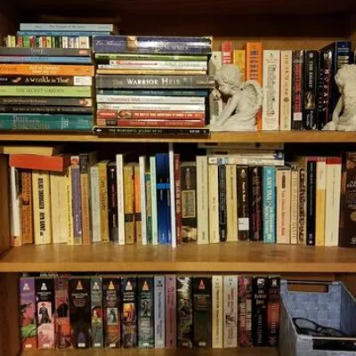

Each session is individual with me. I do not employ other tutors. I do this so I can monitor and adapt my teaching style as students grow. The first session is free.
Each session is designed to meet the individual student's learning style and their personality. My methods, especially in math, are different than what is used in school, but very effective. Learning should be fun; I incorporate fun terminology (you won’t believe all the crazy things fractions do!) as well as fun assignments. However, the priority is school work.
Over the summer and holidays, lessons are designed to review subjects not yet mastered and to prepare for the next year.
Remote tutoring
Remote tutoring is available between 7 p.m. and 9 p.m. PST, provided via Zoom.
In person tutoring
In person tutoring sessions are between 3 p.m. and 6 p.m. PST Sunday through Thursday at my location in San Diego, California.
All students participating in person must sign a disclaimer form. Three people on the premises have first aid and CPR experience.
In-person supplies a student should bring:
Computer or other electronic devices and chargers
Notebook with paper supplies
Pencils or pens and a highlighter
Planner (paper or electronic)
Emailed papers from Ms. Aislynn
Reading book
Optionally, water bottle or a drink with a lid, but no food (even when waiting) due to possible allergies
For all scheduled students, these are additional free services available to them.
Library access
I have a library with 300+ books for student use. I help students choose books at their reading level and interest. You may pick up books if you are in the San Diego area, using a non-contact system. No fee or time limits for how long a student can keep a book, as long as they are using it.

Access to me for questions
Students are encouraged to contact me via phone, text, email or meeting site for quick questions about homework or just to even hear they are ready for a test.
Emergency sessions
If the student needs to work with me on a question we can arrange a session. Anything under 30 min is free. Anything over is charged, but will only occur with parent knowledge and agreement.
Editing
I can edit students' papers via email if given 24 hours notice. Students are expected to do 2 edits first.
Scheduling and planning
I can help create weekly study plans, high school or college course planning, or learn to use a planner (either on paper or online). I help students find the best way for them to manage their time and become responsible for their education as well as their extra-curricular activities.
Other services for an additional fee
For all scheduled students, these are additional free services available to them.
Attendance at school meetings
Upon parent request and student knowledge, I can attend school meetings. This includes parent teacher conferences as well as IEP or other meetings. I can help parents and students get the most out of these meetings. This is a charged service for the duration of the meeting. Any preparation time is not charged.
Editing help for non-students
Email: You can send me your prompt and writing by email. I will edit it and email back my suggestions. $15 for each edit by email.
Online: I can meet with you online to go over previously edited content by email or we can work on the project directly. $15 each 30 minutes.